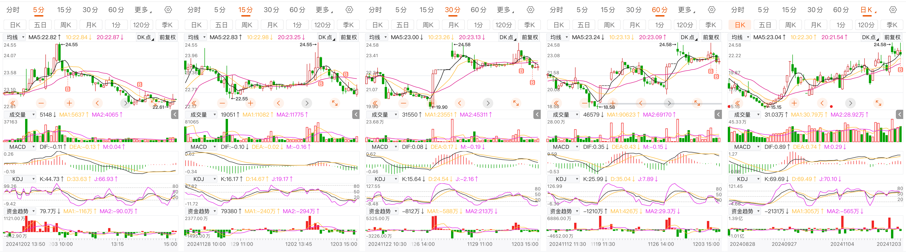
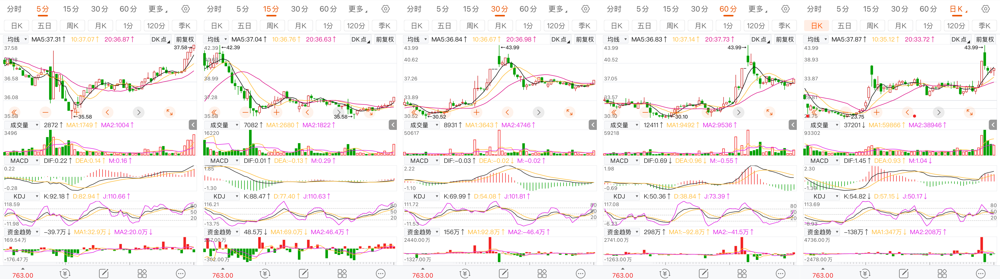

12月3日有感
最新修改语句：
2024.11.29 14:00:00，60分钟kdj金叉，30分钟MACD金叉，非新股与次新股，非st股，非科创板，非北证；一个月内有过涨停；日换手率大于5%，
今天的操作，有点看走眼的感觉，由K线的判断，转移到了单一K线柱的底部，事后一想，嗯，又有点异想天开了。
早盘的第一次买点，其实就有问题，5分钟K线MACD死叉介入。盘中还判断低位不破，可笑。
当时只看了30分钟趋势，忽视了趋势由短期指标助力的条例。
其后，就是预料到的，股价下跌。这个问题，真不该犯的

盘后挑出一个股，虽然振幅小，但是很符合买点指标
14：40分的5分/36.85。

形态上学啊